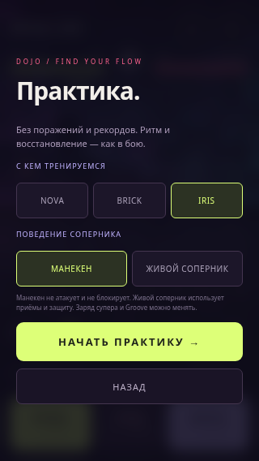
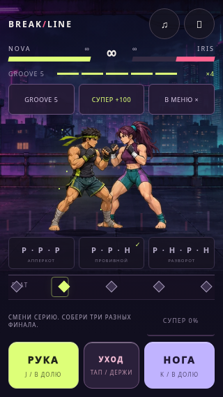
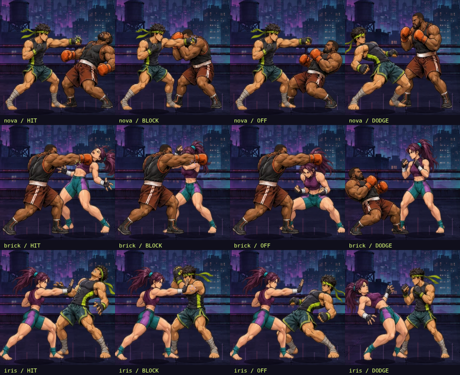
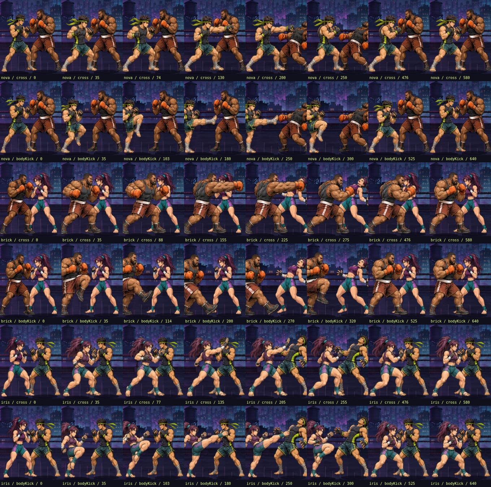

Самостоятельная версия с 144 рисованными кадрами. Материалы тестового прототипа из ветки afterhours-dojo. Выберите бойца, откройте обучение или начните обычный бой.
В главном меню — СВОБОДНАЯ ПРАКТИКА. Любой из трёх соперников, манекен или полноценный ИИ, без поражения и таймера. Сверху — учебный супер и фиксированные уровни Groove с возвратом в АВТО. Ритм и восстановление настоящие, в дуэль ресурсы не переносятся.
65 браузерных проверок практики


Три героя, четыре контактных сценария. Уход IRIS сделан ниже после просмотра, чтобы широкий удар BRICK явно проходил над ней. Без новых изображений или деформации костей.

NOVA, BRICK и IRIS на Мастере. Тестовый игрок использует настоящие touch-кнопки; чтение состояния нужно ему для выбора действия, прямых команд боевой логике нет. Все три победили с тремя разными финалами, суперударом и уходами. Записи Chromium немые: звук браузерной видеозаписью не захвачен. Это автоматическая стратегия, не человек и не Android.
Точные результаты живых боёв · экраны результата: NOVA / BRICK / IRIS
18 секунд, 540 кадров: обычная скорость со звуком и 0,5× без звука. В этом отдельном постановочном показе противник не атакует, заряд супера заполнен. Аудиодорожка восстановлена из событий тем же игровым движком и совмещена с кадрами.
Три героя, рука и нога каждого: подготовка, контакт, продолжение, сгибание и восстановление. Полный размер.


На героя — базовые 36 рисунков и дополнительные 12: NOVA / переходы, BRICK / переходы, IRIS / переходы. Оригинальные иллюстрации созданы генератором до текущего ограничения на использование платных API; новых вызовов генератора в последнем цикле не было. Источники сохранены в Git. Это не ручная работа художника.
Оригинальные синтезированные звуковые сигнатуры суперударов. Человеческой озвучки нет.
Сохранённый контроль пяти слоёв AFTERHOURS. Изменение энергии и визуальный hitstop не перезапускают музыку.
13 002 утверждения правил, 128 браузерных проверок боя/обучения, 65 практики и 3 полных native-touch боя. Все 12 уроков выполнены каждым героем. Длина костей проверяется у архивного rig; это не измерение анатомии в рисунке. Пиксельная проверка новой опоры даёт отклонение не более 1 px. Ошибок JavaScript нет.
Последний диагностический замер Chromium: DPR2, CPU×4, 120 кадров, p95 17.2 мс. Это настольная среда: Android, энергопотребление и аппаратная задержка не измерялись. Ограниченное число целых рисунков пока не обеспечивает непрерывности каждого сустава.
Правила и сценарии · Браузер / графика / память / звук · Параметры показа
Один SHA-256 во всех пяти отчётах и игровом HTML: d9437d6ff6ca09446ef7c8b266bfac8bfd66f00893fd2ea63abf67eb81149b09. Основная полная BREAKLINE не менялась.